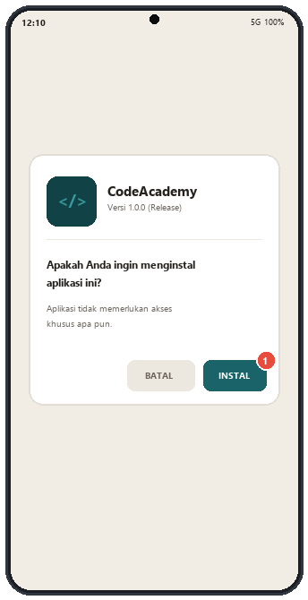
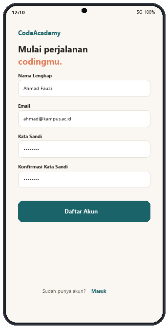
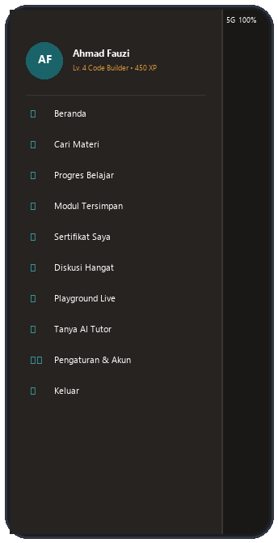
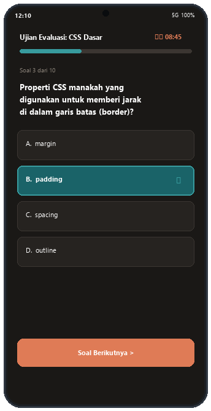
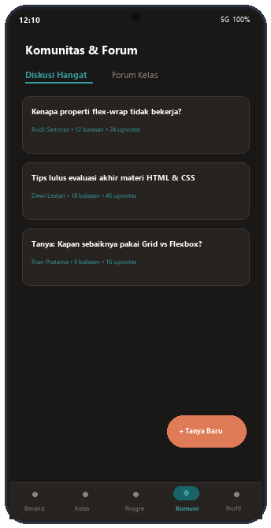
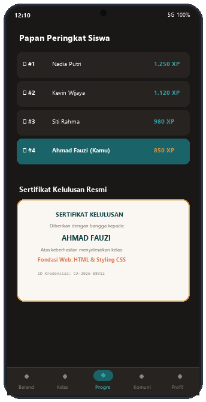
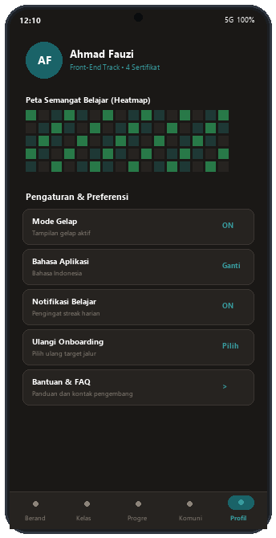
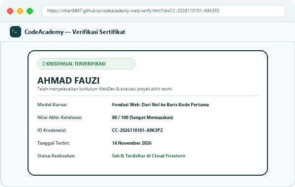

MANUAL BOOK
Platform Pembelajaran Web Development & Coding Mobile-First
(Aplikasi Android Offline-First, Portal Fasilitator, Panel Super Admin & Verifikasi Sertifikat)
PENGENALAN SISTEM, ARSITEKTUR & SPESIFIKASI PLATFORM
CodeAcademy adalah ekosistem pembelajaran pemrograman Web Development mobile-first yang menggabungkan Aplikasi Mobile Android (Offline-First), Backend Cloud Firebase, dan Portal Web Multi-Peran (Halaman Publik, Portal Fasilitator, Panel Super Admin, dan Portal Verifikasi Sertifikat). Sistem ini dirancang agar mahasiswa maupun pembelajar pemula dapat belajar konsep hingga praktik menulis kode HTML, CSS, dan JavaScript langsung dari ponsel, sambil tetap terhubung dengan pendampingan fasilitator secara real-time di layar desktop.

Spesifikasi Arsitektur & Komponen Sistem:
| Komponen Platform | Teknologi Utama | Fungsi & Tanggung Jawab |
|---|---|---|
| Aplikasi Mobile (Android) | Kotlin, Jetpack Compose Material 3, Room Database, DataStore | Pembelajaran offline-first, Playground HTML/CSS/JS, Kuis, Forum, Gamifikasi, AI Tutor Codi |
| Autentikasi & Keamanan | Firebase Authentication (Email, Google Sign-In, Anonymous), firestore.rules |
Login siswa & staf, penautan akun tamu ke Google (linkWithCredential), validasi hak akses per peran |
| Sinkronisasi Cloud | Cloud Firestore (Project codeacademy-6a361) |
Koleksi users, forum_posts, project_submissions, certificates, announcements, dan facilitators |
| Asisten AI | Firebase AI Logic SDK (Google Gemini AI) | Tutor interaktif sadar konteks modul/kode, pembantu debugging, sapaan ringkas & contoh kode |
| Web Portal Staf & Publik | HTML5, CSS3, Vanilla JS + Firebase Web SDK (public/) |
Landing page publik, Portal Fasilitator, Panel Super Admin, dan Portal Verifikasi verify.html |
Spesifikasi Kurikulum & Evaluasi Aktual:
| ID Kelas | Judul Kelas | Tingkat | Jumlah Modul | Kuis Bab | Proyek Akhir |
|---|---|---|---|---|---|
fe-web-foundation-00 |
Fondasi Web: Dari Nol ke Baris Kode Pertama | Orientasi | 106 Modul | 5 Kuis | Ya |
fe-css-02 |
CSS Layout Modern: Flexbox & Grid | Pemula-Menengah | 24 Modul | 2 Kuis | Ya |
fe-js-03 |
JavaScript Fundamentals | Pemula | 26 Modul | 2 Kuis | Ya |
| Total Kurikulum | Jalur Spesialisasi Front-End Web Development | Berjenjang | 156 Modul | 9 Kuis | 3 Proyek |
Matriks Peran Pengguna Ekosistem:
- Siswa Terdaftar & Tamu (Android): Membaca 156 modul, menjalankan kode di Playground, bertanya ke AI Tutor Codi, mengikuti kuis, berdiskusi di Forum, mengumpulkan Proyek Akhir, memantau Leaderboard & Sertifikat.
- Fasilitator (
accessRole: "facilitator"di Web): Menilai antrean Proyek Akhir dengan rubrik (40% Kuis + 60% Proyek), menerbitkan sertifikatCC-...atau meminta revisi, menjawab & mem-pin Jawaban Terverifikasi di Forum, mengirim Pengumuman kelas, dan mengatur Profil Fasilitator. - Super Admin (
accessRole: "super_admin"di Web): Memiliki seluruh hak akses Fasilitator ditambah manajemen Tim Fasilitator (/facilitators/{email}), Sertifikat & Audit, Ringkasan Analitik & Direktori Siswa, serta Unduh Laporan CSV nilai dan sertifikat. - Publik / Penguji / Rekruter (
verify.html): Memeriksa keabsahan ID Kredensial SertifikatCC-...tanpa perlu login.
UNDUH & INSTALASI APLIKASI VERSI MOBILE (ANDROID)
Spesifikasi Kebutuhan Sistem Minimum:
- Sistem Operasi: Android 8.0 (Oreo) atau versi yang lebih baru (API Level 26+).
- Memori RAM: Minimal 2 GB (disarankan 4 GB atau lebih agar rendering WebView Live Preview di Playground berjalan mulus).
- Ruang Penyimpanan Kosong: Minimal 150 MB untuk aplikasi, Room Database, dan cache materi offline.
- Koneksi Jaringan: Materi inti dapat dibaca offline; internet aktif diperlukan untuk AI Tutor Codi, sinkronisasi Google, Forum real-time, Leaderboard, dan pengumpulan Proyek Akhir.
- Dukungan Bahasa Aplikasi: Tersedia dalam 4 bahasa antarmuka: Bahasa Indonesia, English, 日本語 (Jepang), dan 中文 (Mandarin).
Langkah-Langkah Pemasangan (Instalasi APK):
CodeAcademy-v1.0-release.apk dari repositori resmi proyek atau tautan distribusi kelas.
Keterangan Gambar:
- [1] Tombol Instal: Ketuk tombol ini untuk mengonfirmasi pemasangan berkas aplikasi CodeAcademy ke perangkat Android Anda.
PENDAFTARAN AKUN, MASUK, GOOGLE LINKING & PEMULIHAN SANDI
Untuk menyinkronkan poin XP, streak harian, riwayat forum, dan sertifikat kelulusan ke Cloud Firestore, pengguna disarankan masuk menggunakan akun terdaftar atau Google Sign-In. Aplikasi juga mendukung Masuk sebagai Tamu (autentikasi anonim) yang nantinya dapat ditautkan ke akun Google tanpa kehilangan progres maupun membuat akun ganda di Papan Peringkat.


Langkah Masuk Akun (Login — Gambar 3A):
Langkah Pendaftaran Akun Baru (Register — Gambar 3B):
Keterangan Gambar 3A:
- [1] Kolom Input Email & Kata Sandi: Area pengisian kredensial email dan kata sandi akun pengguna.
- [2] Tautan Lupa Kata Sandi?: Membuka alur pemulihan/reset kata sandi pengguna.
- [3] Tombol Masuk ke Akun: Memvalidasi kredensial dan membuka dashboard utama.
- [4] Tautan Daftar Sekarang: Berpindah dari layar Masuk ke formulir Pendaftaran akun baru (Gambar 3B).
ALUR ONBOARDING SISWA BARU (5 LANGKAH)
Pengguna baru disambut alur Onboarding Interaktif 5 Langkah untuk memetakan tujuan belajar dan ritme harian sebelum masuk ke Beranda:

Rincian Tahapan Onboarding:
| Langkah | Nama Tahap | Fungsi & Aksi Pengguna |
|---|---|---|
| 01 | Welcome Step | Sambutan bersama maskot Codi serta pengenalan metode microlearning Web Development 156 modul. |
| 02 | Code Preview Step | Simulasi interaktif mengubah elemen kode HTML dan melihat hasil render tampilan secara langsung di layar. |
| 03 | Community Step | Pengenalan fitur Forum Diskusi kelas, Papan Peringkat mingguan, serta bimbingan dari Fasilitator. |
| 04 | Track Selection Step | Pemilihan jalur kurikulum utama Front-End Web Development (HTML5, CSS3, Flexbox/Grid, JavaScript ES6). |
| 05 | Plan Summary Step | Penentuan target komitmen belajar harian (10–45 menit/hari), tujuan karier, dan estimasi selesai kelas pertama. |
BERANDA (HOME DASHBOARD), STREAK, MISI & TANTANGAN KILAT
Beranda merupakan pusat kendali belajar harian yang merangkum status streak, capaian XP, tips harian Codi, kuis kilat 1 menit, misi harian, dan pintasan kelas aktif.

Alur & Komponen Utama Beranda:
196 dp) [3]: Geser 3 kartu utama dengan tinggi seragam: (a) Banner Promo Mobile-First Coding dengan tombol putih kontras tinggi, (b) Kartu XP Minggu Ini lengkap dengan animasi count-up akurat, level aktif, dan progres target 250 XP tanpa nilai fallback palsu, serta (c) Kartu Rekomendasi Kelas.- Codi Daily Tip: Menampilkan tips pemrograman harian (sintaks ber-backtick otomatis dirender monospace), lengkap dengan tombol Tanya AI dan Coba Kode.
- Tantangan Kilat 1 Menit (+15 XP): Soal harian pilihan ganda berlabel badge A / B / C dengan highlight hijau/merah, ikon status, dan penjelasan inline code saat dijawab. Dilindungi guard 1x per hari (anti double-tap & anti-spam) yang tersimpan per tanggal (
yyyy-MM-dd).
MENU SAMPING (DRAWER), PENCARIAN GLOBAL & TERSIMPAN


Langkah Menggunakan Menu Samping & Pencarian:
"Flexbox", "Semantic", atau "Promise") untuk menelusuri seluruh 156 modul secara instan dan melompat langsung ke modul terkait.KATALOG KELAS, PLACEMENT TEST & DETAIL SILABUS KURSUS


Fitur & Cara Menggunakan Menu Kelas:
X/Y Modul atau Y Modul), progress bar proporsional, durasi ramah (mis. 9 jam 33 mnt / 9h 33m), ikon bookmark (48 dp) dengan notifikasi Toast "Disimpan", serta tombol aksi Mulai, Lanjutkan, atau Ulangi.PEMBELAJARAN INTERAKTIF (MATERI READER)

Cara Belajar Menggunakan Materi Reader:
48 dp) untuk menyalin ke clipboard, atau ketuk Coba di Playground [4] untuk langsung menjalankan potongan kode tersebut di sandbox eksekusi.PLAYGROUND INTERAKTIF (LIVE HTML/CSS/JS SANDBOX)

Alur Penggunaan Live Code Sandbox:
index.html, style.css, atau script.js untuk menulis atau mengedit kode secara terpisah tanpa auto-correct yang mengganggu sintaks. Draf perubahan otomatis tersimpan per kelas di perangkat (auto-save).console.log) yang dapat dibersihkan.FITUR AI TUTOR CERDAS (CODI — GOOGLE GEMINI AI)

Kemampuan & Cara Menggunakan AI Tutor Codi:
imePadding) dan menggulir ke pesan terbaru.SISTEM EVALUASI, KUIS BAB & EVALUASI AKHIR


Aturan & Alur Pengerjaan Evaluasi:
PENGUMPULAN TUGAS AKHIR (FINAL PROJECT SUBMISSION)

Langkah Mengumpulkan Proyek Akhir:
project_submissions di Cloud Firestore dengan status awal PENDING_REVIEW.- Jika berstatus
REVISION_REQUESTED: baca catatan perbaikan dari Fasilitator, perbaiki kode, lalu kirim ulang (resubmit). - Jika berstatus
APPROVED: sertifikat digital ber-IDCC-...otomatis aktif di layar Sertifikat.
FORUM DISKUSI KELAS REAL-TIME & TARGETED REPLY

Fitur & Alur Diskusi di Aplikasi Android:
forum_posts Firestore (query langsung tanpa bottleneck composite index dan memastikan autentikasi anonim/Google aktif sebelum memuat).Dijawab Fasilitator serta lencana khusus Fasilitator.- Ketuk pill jumlah balasan untuk memperluas daftar komentar dengan garis vertikal thread penuh dan Quote Box kutipan target balasan.
- Ketuk Balas pada topik utama maupun pada komentar tertentu untuk memunculkan banner "Membalas @Nama" di atas kolom ketik.
- Batas penulisan hingga 4000 karakter dengan validasi server timeout (
10 detik) dan notifikasi Toast apabila jaringan terputus agar indikator kirim tidak berputar tanpa henti.
PROGRES BELAJAR, PAPAN PERINGKAT & SERTIFIKAT DIGITAL

Rincian Progres, Leaderboard & Sertifikat:
0%), serta rincian per modul.- Filter periode (Mingguan, Bulanan, Sepanjang Waktu, Streak 🔥) dan filter Jalur dalam bahasa aktif aplikasi.
- Podium Top 3 Simetris: Jika peserta kurang dari 3, slot kosong tampil sebagai placeholder "Menunggu"; badge
Kamutampil terpisah rapi agar nama tidak terpotong. - Bar Peringkat Pribadi ("Kamu") & Daftar #4+: Menampilkan peringkat di luar podium serta selisih poin ke peringkat tepat di atas Anda (misal "Kurang 12 XP lagi ke #2").
- Ketuk baris pengguna lain untuk melihat Profil Publik siswa tersebut.
CC-...) & Berbagi Tautan Verifikasi: Menampilkan nilai akhir gabungan (40% Kuis + 60% Proyek), predikat kelulusan, nomor kredensial unik, serta tombol Bagikan yang menyertakan URL langsung ke Portal Verifikasi Web (verify.html?id=CC-...).PROFIL PENGGUNA, PETA AKTIVITAS, BAHASA & ZONA BERBAHAYA

Fitur Lengkap Halaman Profil:
HAPUS atau DELETE) lalu membersihkan data lokal Room, DataStore, serta dokumen users/{uid} di Firestore.HALAMAN PUBLIK WEB & PINTU MASUK PORTAL STAF (`public/index.html`)
Untuk memisahkan fungsi informasi publik dari ruang kerja operasional staf, halaman utama web (https://ivhan9867.github.io/codeacademy-web/) berperan sebagai Portal Publik:
.docx.verify.html bagi penguji, dosen, atau rekruter untuk mengecek keaslian sertifikat.Portal Fasilitator & Admin): Mengarahkan pengajar dan admin ke halaman autentikasi portal operasional terpisah (facilitator/index.html) agar menu staf tidak bercampur dengan beranda publik.PORTAL WEB FASILITATOR: PROYEK, FORUM TERVERIFIKASI & PROFIL
Portal Staf (public/facilitator/index.html) menggunakan layout Sidebar Workspace khusus pengajar dengan 3 menu utama untuk peran Fasilitator (accessRole: "facilitator").

Alur Kerja & Fitur Fasilitator:
● Live Firebase vs ● Demo Offline):- Masuk dengan Email/Password atau Masuk dengan Google via Firebase Auth; sistem mengecek dokumen
/facilitators/{email}di Firestore sebelum membuka dashboard. - Tersedia pula tombol Demo Fasilitator dan Demo Super Admin di layar login untuk simulasi offline tanpa menulis ke Firestore.
- Klik pill identitas (
👤 Nama · Role) di pojok kanan atas navbar untuk membuka Profil Fasilitator. - Perubahan nama, spesialisasi/jabatan, dan bio disimpan ke
localStorageserta disinkronkan ke/facilitators/{email}di Firestore dan otomatis dipakai di Forum, Pengumuman, maupun Sertifikat.
- Pantau kartu statistik antrean (Total, Menunggu Review, Perlu Revisi, Disetujui) [1], saring status/kelas [2], lalu klik Tinjau [3].
- Di Modal Review, telaah kode HTML/CSS/JS peserta sambil menguji hasil tampilannya di tab Live Preview bersandbox (
sandbox="allow-scripts"). - Isi checklist rubrik atau skor Proyek (
0–100); kalkulator otomatis menggabungkan 40% Kuis + 60% Proyek. Gunakan Minta Revisi (disertai tag umpan balik cepat) atau Setujui & Terbitkan (otomatis menulis dokumen ke koleksicertificates).
- Filter thread Semua Kursus atau Belum Dijawab Fasilitator, dan buat topik diskusi baru langsung dari portal web.
- *Balas Spesifik (Targeted Reply): Klik tombol Balas pada komentar mana pun untuk memunculkan banner "Membalas @Nama"* (dan tombol batal
×) sehingga balasan tersimpan lengkap denganreplyToPostId,replyToAuthorName, danreplyToContentSnippetyang selaras 100% dengan Android. - Pin Jawaban Terverifikasi (
📌 Pin): Menandai jawaban terbaik (isVerifiedAnswer: true), otomatis mem-pin jawaban ke urutan teratas balasan dalam thread, dan menyematkan status✓ Terjawabdi header thread. - Tandai Jawaban Membantu (
💡): Memberi apresiasiisHelpful: truepada kontribusi siswa yang membantu.
announcements untuk tampil di aplikasi Android peserta.PANEL SUPER ADMIN: TIM FASILITATOR, AUDIT SERTIFIKAT & EXPORT CSV
Akun staf yang memiliki field accessRole: "super_admin" pada dokumen Firestore /facilitators/{email} otomatis memperoleh lencana 👑 Super Admin di navbar serta akses ke kelompok menu kedua pada Sidebar Workspace: Panel Super Admin (menu ini disembunyikan dari Fasilitator biasa).

Modul Khusus Super Admin [1][2][3]:
👑 Super Admin [1], sedangkan sidebar kiri menampilkan grup khusus Panel Super Admin [2] yang terdiri atas 3 sub-panel:- Sertifikat & Audit: Memantau seluruh sertifikat
CC-...yang terbit lintas kursus serta mengekspor registri sertifikat. - Tim Fasilitator (
/facilitators/{email}): Menambah akun email Google baru sebagai staf, memilih atau mengubah peran (FasilitatorvsSuper Admin), dan mencabut akses akun yang sudah tidak aktif tanpa harus membuka Firebase Console. - Ringkasan & Siswa (
/users): Memantau Rasio Lulus Proyek (%), Topik Forum Terverifikasi, Total Sertifikat Terbit, Jumlah Siswa Cloud, dan tabel klasemen siswa aktif (Total XP, Level, Streak).
codeacademy-sertifikat.csv) dan laporan nilai proyek akhir (codeacademy-nilai-proyek.csv) secara instan di browser.PORTAL VERIFIKASI SERTIFIKAT PUBLIK & KEAMANAN `firestore.rules`
CodeAcademy menyediakan Portal Verifikasi Kredensial Publik di https://ivhan9867.github.io/codeacademy-web/verify.html (public/verify.html) yang terhubung langsung ke Cloud Firestore (certificates/{certId}).

Cara Validasi & Perlindungan Keamanan Data:
CC-...): Masukkan ID Kredensial sertifikat pada kolom pencarian atau buka langsung tautan bagikan dari aplikasi Android (verify.html?id=CC-2026110101-A9K3P2).✓ KREDENSIAL TERVERIFIKASI, nama lengkap lulusan, nama kelas, nilai akhir (40% Kuis + 60% Proyek), predikat, tanggal terbit, dan nama fasilitator penilai.firestore.rules:/facilitators/{email}: HanyaisSuperAdmin()yang dapat membaca seluruh daftar tim, menambah anggota, atau menghapus akses; fasilitator biasa hanya dapat membaca dan memperbarui profil miliknya sendiri tanpa izin mengubahaccessRole./project_submissions/{id}: Siswa hanya dapat membuat/memperbarui pengajuan miliknya sendiri dengan statusPENDING_REVIEW; skor & keputusan akhir hanya boleh ditulis olehisFacilitator()./forum_posts/{postId}: Dapat dibaca oleh semua pengguna login (termasuk tamu anonim); siswa tidak dapat memalsukan flagisMentor/authorIsMentor; fasilitator memiliki hak moderasi, hapus, dan pin jawaban terverifikasi./certificates/{certId}: Terbuka untuk dibaca publik (verify.html), namun pencabutan/hapus dibatasi khususisFacilitator()/ Admin dan skor valid wajib70–100./announcements/{id}: Terbuka dibaca aplikasi siswa, dan hanya boleh dibuat/diubah/dihapus olehisFacilitator().
Informasi Dokumen:
- Platform: CodeAcademy Mobile (Android) & Web Portal (Publik, Fasilitator, Super Admin, Verifikasi)
- Basis Konten: Kode Sumber Terkini & Aset Kurikulum (
156 Modul/3 Kelas Front-End) - Template Dokumen: Pengembangan Bahan Ajar Edisi I 2026
- Tahun Pembuatan: 2026